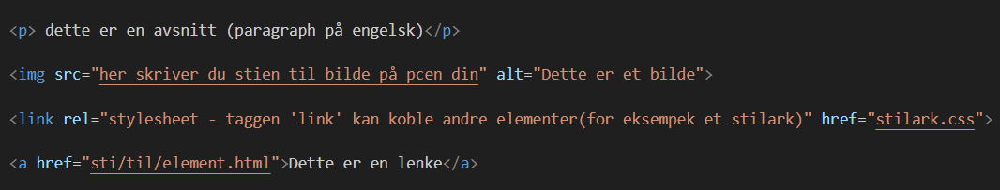

Hvorfor lærer du HTML?
Har du noen gang lurt på hvordan nettsider blir til?
Svaret starter nesten alltid med HTML og CSS. HTML bygger selve skjelettet på en nettside – overskrifter, tekst, bilder og lenker. CSS gir sidene farge, form og stil. Sammen skaper de alt fra enkle blogger til avanserte nettbutikker.
Selv i en tid med moderne rammeverk som React, Angular og Vue, ligger HTML-strukturen fortsatt i bunnen. Når du forstår HTML og CSS, blir det mye enklere å lære nye verktøy og teknologier. Du får et solid fundament som gjør deg mer fleksibel og verdifull som utvikler eller designer.
I Norge er etterspørselen etter folk som kan bygge brukervennlige og pene nettsider fortsatt høy. Med kunnskap i HTML, CSS og JavaScript kan du åpne døren til en spennende karriere – enten du vil lage egne prosjekter, jobbe i et kreativt byrå eller bidra til å utvikle digitale løsninger for bedrifter.
Å lære HTML og CSS handler ikke bare om koding – det handler om å skape, forme og dele ideer med verden.
HTML: Hva er dette?
Internett er en del av hverdagen vår.
Du har sikkert bestilt bussbilletter, kjøpt pizza eller handlet klær via en nettside eller app.
Der kan du velge blant mange produkter og tjenester – presentert med bilder, tekst, videoer og kanskje til og med musikk.
Men selv om vi gjør dette daglig, er det fortsatt mange som ikke vet hvordan det egentlig fungerer. Hvordan dukker alle bildene,
beskrivelsene og knappene opp på skjermen din – enten du bruker mobil eller PC?
Svaret ligger i HTML – språket som bygger opp innholdet du ser på nettet. Velkommen til HTML-verden!
HTML er et markeringsspråk som brukes til å lage nettsider, webapplikasjoner,
desktop-applikasjoner og mobilapplikasjoner.
I dette prosjektet er det webutvikling og nettsider som er hovedtema, og vi skal derfor
ikke gå nærmere inn på de andre teknologiene som ble nevnt.
Et markeringsspråk er et regelsett som brukes til å definere formatering, struktur og innhold i et dokument ved hjelp av "tagger". En tagg kan beskrive hva slags data som skal vises.
I dette eksemplet kan vi si at hver eske tilsvarer en tagg,
mens innholdet i eskene tilsvarer dataen eller informasjonen som taggen omgir.
La oss si at vi har tre forskjellige esker, hver med sitt innhold:
- eske1 inneholder et par Nike-sko
- eske2 inneholder sjokolade
- Og eske3 inneholder pizza
Hvis vi bruker en kodeeditor, kan disse eskene – altså taggene – se slik ut:
Men ekte HTML-tagger ser slik ut:

Tagger
HTML-taggene forteller nettleseren om innholdet og strukturen til de ulike
elementene på nettsiden. At overskrifter får større skriftstørrelse, eller
at lenker blir blå og understreket, er en tilleggseffekt som mange nettlesere
gir teksten for å synliggjøre elementenes rolle.
I dag skal utviklere bruke et eksternt CSS-dokument (stilark) for å angi instruksjoner som kun
påvirker nettsidens utseende, selv om enkelte eldre versjoner av HTML har støtte for dette direkte.
For funksjonalitet benyttes et scriptingspråk, hvor JavaScript er det mest brukte i dag.
| Tagg |
Forklaring |
| <!DOCTYPE html> |
Deklarasjon som forteller nettleseren at dokumentet er skrevet i HTML5. |
| <html> |
Den overordnede containeren for hele HTML-dokumentet. |
| <head> |
Inneholder metadata om dokumentet, som for eksempel tegnsett og tittel. |
| <title> |
Viser navnet på siden i nettleserens fane. |
| <body> |
Inneholder det som vises på nettsiden, inkludert tekst, lenker, bilder, osv. |
| <h1>, <h2>, osv. |
Overskrifter av forskjellige nivåer, hvor <h1> er den største og mest betydningsfulle. |
| <p> |
Avsnitt som brukes for å gruppere tekst. |
| <a> |
Anker-tagg som brukes til å lage lenker. href-attributtet angir hvor lenken går. |
| <ul> og <li> |
En uordnet liste (ul står for "unordered list") og listeelementer (li står for "list item"). |
| <br> |
Linjeskift som brukes til å lage en ny linje uten å starte et nytt avsnitt. |
| <hr> |
Horisontal linje som brukes til å visuelt dele opp innhold. |
| <img> |
Brukes for å vise bilder på nettsiden. |
| <div> |
En container som brukes til å gruppere innhold og strukturere siden. |
Introduksjon til GIT
Hva er GIT?
GIT er en distributed version control system (DVCS), det vil si en et program som hjelper deg
til å holde oversikt over filene og katalogen (directory) i prosjektet ditt. Det finnes flere andre DVCS som
subversion, perforce og andre.